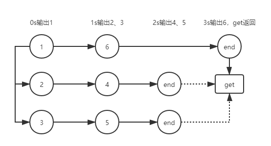

概述 CompletableFuture是从Java 1.8 开始引入的异步任务处理类。它实现了Future接口和CompletionStage接口。前者在Java1.5中引入，在线程池的应用中已经简单介绍过。后者才是核心的特性。
CompletionStage接口从Java1.8开始引入，提供了多个Future之间的多种组合，提供了异步任务的“编排”功能。使得我们可以非常灵活的进行异步编程。
所以使用CompletableFuture，更准确的说，就是熟悉CompletionStage这个接口的各种用法。
同步、异步与执行顺序 要熟悉异步编程，首先需要分清的就是我们的程序究竟以什么样的顺序逻辑在执行。
CompletableFuture提供了很多种任务编排的方式，大部分接口提供都形如：thenApply和thenApplyAsync两个形式，即同步方法和异步方法。顾名思义，同步方法就是指两个任务顺序执行，而异步方法则是指两个任务异步执行。
根据惯例，空口无凭，我们来举个栗子：
1 2 3 4 5 6 7 8 9 10 11 12 13 14 15 16 17 18 19 20 21 22 23 24 25 26 27 28 29 30 31 32 33 34 35 36 public static void acceptAndAsync () long base = System.currentTimeMillis(); CompletableFuture<Void> start = CompletableFuture.runAsync(()->{ System.out.println("task 1 at " + (System.currentTimeMillis()-base)); }); start.thenAccept((v)->{ try { Thread.sleep(1000L ); System.out.println("task 2 at " + (System.currentTimeMillis()-base)); } catch (InterruptedException e) { e.printStackTrace(); } }); start.thenAccept(v-> { try { Thread.sleep(1000L ); System.out.println("task 4 at " + (System.currentTimeMillis()-base)); } catch (InterruptedException e) { e.printStackTrace(); } }); start.thenAcceptAsync(v-> { try { Thread.sleep(1000L ); System.out.println("task 3 at " + (System.currentTimeMillis()-base)); } catch (InterruptedException e) { e.printStackTrace(); } }); try { start.get(); System.out.println("finish at " + (System.currentTimeMillis()-base)); } catch (InterruptedException | ExecutionException e) { e.printStackTrace(); } }
上面这段程序的输出如下：
1 2 3 4 5 task 1 at 73 task 2 at 1073 task 4 at 2074 task 3 at 2074 finish at 2074
在这个程序中，我们包含了四个异步任务，每个任务都打印了自己的完成时间。
第一个任务，打印了起始时间。
第二个任务，和第四个任务是两个同步任务，可以看到他们的时间是连续的，说明这两个任务是顺序执行的。第二个任务阻塞了后续任务的执行。
第三个任务是插在其中的一个异步任务，可以看到它的执行时间和第四个任务是相同的，说明这两个任务是异步执行的，执行第三个任务的时候并没有阻塞第四个任务的执行。
可是！事情并没有这么简单！
这里有一个需要注意的点：所有的任务都是以start这个CompletableFuture作为基准。最终使用start.get()方法来阻塞等待结果，只能等待到start中所有同步任务的结果。
如果我们交换了任务三和任务四的顺序，最终的输出结果会是如下：
1 2 3 4 task 1 at 66 task 2 at 1067 task 4 at 2068 finish at 2068
会发现任务三的结果消失了。这是因为在任务三是异步执行的，不会阻塞start的完成。
为了获得任务三的结果，我们需要使用一个新的CompletableFuture来接收任务3的结果：
1 2 3 4 5 6 7 8 CompletableFuture end = start.thenAcceptAsync(v-> { try { Thread.sleep(1000L ); System.out.println("task 3 at " + (System.currentTimeMillis()-base)); } catch (InterruptedException e) { e.printStackTrace(); } });
这样我们最后执行end.get()，就可以输出所有任务的结果，即阻塞到了全部任务完成。
而神奇的是，即使我们以1,3,2,4的顺序编写任务，最终以end.get()来阻塞等待，也可以等待到所有任务都执行完毕，不过执行结果有所变化：
1 2 3 4 5 task 1 at 90 task 2 at 1091 task 3 at 1091 task 4 at 2092 finish at 2092
如果我们在任务三的返回结果end之后再增加一个任务五，就可以发现，任务五的执行时间是在任务四完成之后才继续执行。无论同步异步的方法皆是如此。
可能读者看到这里已经懵了，这个玩意到底是怎么个顺序去执行的？
不要急，我们来做一个新的案例，这个案例中包含了六个任务，为了节约空间，我们省去异常处理的部分：
1 2 3 4 5 6 7 8 9 10 11 12 13 14 15 16 17 18 19 20 21 22 23 24 25 26 27 28 public static void acceptAndAsync () long base = System.currentTimeMillis(); CompletableFuture<Void> start = CompletableFuture.runAsync(()->{ System.out.println("task 1 at " + (System.currentTimeMillis()-base)); }); CompletableFuture three = start.thenAcceptAsync(v-> { Thread.sleep(1000L ); System.out.println("task 3 at " + (System.currentTimeMillis()-base)); }); CompletableFuture two = start.thenAcceptAsync((v)->{ Thread.sleep(1000L ); System.out.println("task 2 at " + (System.currentTimeMillis()-base)); }); two.thenAccept(v-> { Thread.sleep(1000L ); System.out.println("task 4 at " + (System.currentTimeMillis()-base)); }); CompletableFuture five = three.thenAccept(v-> { Thread.sleep(1000L ); System.out.println("task 5 at " + (System.currentTimeMillis()-base)); }); start.thenAccept(v-> { Thread.sleep(3000L ); System.out.println("task 6 at " + (System.currentTimeMillis()-base)); }); five.get(); System.out.println("finish at " + (System.currentTimeMillis()-base)); }
首先请读者仔细思考一下，这个程序会输出怎样的结果？
然后我们来用一张图描述各个任务的执行情况：

可以看到通过两次创建异步任务，其实六个任务分为了三个并行的序列。但是只有在最开始的任务一所在序列执行完成之后，才会执行到get方法。
这个原理其实非常简单：因为任务一发起的同步任务是在当前线程执行的。所以同步任务会耗费当前线程的执行时间，只有当同步任务全部执行完毕后，才会执行到get()方法。而任务二、任务三发起的同步任务四和五，是各自在二、三的执行线程上顺序执行的，不会阻塞主线程。
所以在编排任务时，一定要注意同步异步线程的耗时不同，否则会导致很多意外的执行结果。
1 CompletableFuture有一个join()方法，可以把Future合并到当前线程进行同步执行。
异步执行线程池 CompletableFuture执行异步任务，是通过线程池来执行的。实际上，CompletionStage接口所有的异步方法都有重载的两种形式：xxxAsync(task)和xxxAsync(task, executor)。后者即为指定执行异步任务的线程池。
如果没有指定一个线程池来执行异步任务，CompletableFuture中有两种默认的线程池来执行：ForkJoinPool.commonPool() 和 new ThreadPerTaskExecutor()。具体选择哪个，由ForkJoinPool的并发等级来确定，如果并发等级高于1，则使用ForkJoinPool.commonPool()，否则使用另一个。
ThreadPerTaskExecutor是一个非常简单的Executor的实现。顾名思义，它为每一个新任务都新建了一个线程。所以也很容易理解为何尽量不要使用这种形式。
仍旧使用上节最后的案例来举例，在执行异步任务时指定一个大小为1的线程池：
1 2 3 4 5 6 7 8 9 10 11 12 13 14 ExecutorService executor = Executors.newFixedThreadPool(1 ); ... CompletableFuture three = start.thenAcceptAsync(v-> { Thread.sleep(1000L ); System.out.println("task 3 at " + (System.currentTimeMillis()-base)); }, executor); CompletableFuture two = start.thenAcceptAsync((v)->{ Thread.sleep(1000L ); System.out.println("task 2 at " + (System.currentTimeMillis()-base)); },executor); ... five.get(); System.out.println("finish at " + (System.currentTimeMillis()-base)); executor.shutdown();
最终得到执行结果如下：
1 2 3 4 5 6 task 1 at 70 task 3 at 1073 task 5 at 2073 task 2 at 3073 finish at 3074 task 4 at 4073
可以看到，任务的执行顺序发生了变化。因为线程池大小为1，所以六个任务无法分为三个并行的序列，实际上分为了两个序列：一个耗时3秒的由任务1、6组成的主序列，和一个耗时4秒的由任务3、5、2、4组成的子序列。
任务五在2秒时执行完毕，而get方法在3秒时，即主序列执行完毕后结束。最后因为线程池还在执行，所以任务四的结果在4秒时执行完毕。
通过自定义线程池，可以控制异步任务的并发数，对系统资源进行优化的调度。
任务编排 要了解CompletionStage的任务编排方法，首先熟悉几个单词：async,apply,accept,run,both,either。任务编排的方法很多，但是其实熟悉了几个关键字之后是非常好记忆和使用的。
首先异步任务的async在本篇一开始已经进行过了介绍，以async结尾的方法都会启动一个异步任务，所以本节不再重复。
具体的编排方法大家可以直接去看CompletionStage接口的源码。相信看过本节之后，只看名字也能知道不同方法的编排方式。
任务的消费者有三种：
apply ：接收一个参数，并返回另一个参数。相当于做一个转换。
accept ： 接收一个参数，返回一个void，即消费。
run ： 不接受参数，返回void，即只在执行顺序上有关联，而不进行传参的处理。
而任务编排不仅是顺序的一对一，还可以支持二对一：
both ：两个Future全部执行完毕后执行后续逻辑。
either ：两个Futuer只要有一个执行完毕，就执行后续逻辑。
下面我们用一些简单的代码来展示一下不同编排的效果。首先来看一组简单的组合：
1 2 3 4 CompletableFuture.completedFuture("Hello" ) .thenApply(h-> (h + " World" )) .thenAccept(System.out::println) .thenRun(()-> System.out.println("Other task" ));
这个程序会输出以下内容：
以上案例是最常用的，CompletableFuture的线性组合。多个任务通过apply/accept/run方法就可以线性的串成一串顺序执行。
后续的案例比较复杂，我们首先需要进行一下初始化工作，构造两个耗时的任务a和b：
1 2 3 4 5 6 7 8 9 10 11 12 13 14 15 16 17 ExecutorService executor = Executors.newFixedThreadPool(2 ); CompletableFuture<String> a = CompletableFuture.supplyAsync(()->{ try { Thread.sleep(1000L ); } catch (InterruptedException e) { e.printStackTrace(); } return "Hello" ; },executor); CompletableFuture<String> b = CompletableFuture.supplyAsync(()->{ try { Thread.sleep(1500L ); } catch (InterruptedException e) { e.printStackTrace(); } return " World" ; }, executor);
下面是涉及到多个任务的组合方式，具体功能就见注释吧：
1 2 3 4 5 6 7 8 9 10 11 12 13 14 15 16 17 18 19 20 21 22 23 24 25 26 27 28 29 30 31 32 33 34 35 36 37 38 a.thenCombine(b, (f1,f2) -> "Combine " + f1+f2).thenAccept(System.out::println); a.thenAcceptBoth(b, (f1,f2) -> System.out.println("accept both " + f1+f2)); long start = System.currentTimeMillis();a.runAfterBoth(b, ()-> System.out.println("after both cost:" + (System.currentTimeMillis()-start))); a.runAfterEither(b, ()-> System.out.println("after either cost:" + (System.currentTimeMillis()-start))); a.applyToEither(b, s->s + " Final" ).thenAccept(System.out::println).join(); CompletableFuture.allOf(a,b).thenRun(()-> System.out.println("all of cost:" + (System.currentTimeMillis()-start))); CompletableFuture.anyOf(a,b).thenRun(()-> System.out.println("any of cost:" + (System.currentTimeMillis()-start))); a.thenCompose(s-> CompletableFuture.completedFuture(s + " World Compose" )).thenAccept(System.out::println); a.whenComplete((s, e)-> System.out.println("when complete" + s)); a.thenCombine(b, (f1,f2) -> f1+f2).thenAccept(System.out::println); a.handle((s, e)-> "handle " + s).thenAccept(System.out::println); executor.shutdown();
小结 本章对CompletableFuture的使用进行了简要的阐述。
CompletableFuture是Java异步编程中非常重要的特性，它大大简化了多个异步任务之间的调度和传参。掌握了CompletableFuture，就基本掌握了Java异步编程的八成。
当然，其实更重要的，是异步编程中对于线程池的调度使用。盲目的使用异步编程而不能较好的调度线程池，往往会令最终效果适得其反。所以一定要夯实线程池的基础。